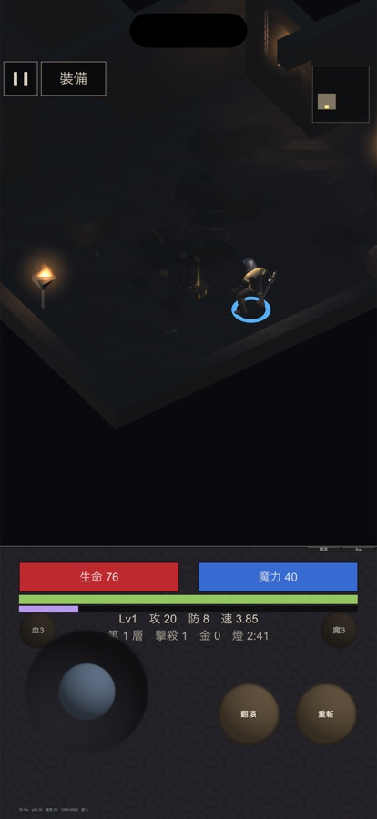

地城迴響 · 動畫庫
先前的結論是「要用新動畫就得把整個專案遷到 Mecanim，2～3 天」。 那個結論太窄。找到同一副骨架的續作動畫庫，直接放進去就能播—— 免費、CC0、零遷移成本。
我查到 KayKit 的動畫包（133 支、CC0、含各種攻擊動作），但它是 KayKit 角色的骨架，跟我們的素體對不上。而專案用的是 Legacy 動畫系統， 不支援 retargeting，所以我的結論是「必須遷移到 Humanoid + Mecanim」。
那句話**只對 KayKit 的動畫成立**，我卻把它講成了「任何新動畫都要遷移」。 正確的說法是：同一副骨架的動畫可以直接用。
專案裡的動畫檔叫 UAL1_Standard，那是 Quaternius 的
Universal Animation Library。骨骼命名是 Unreal 人形慣例：
| 骨架路徑 |
|---|
Armature/root/pelvis/spine_01/spine_02/spine_03/clavicle_l/upperarm_l/lowerarm_l/hand_l/… |
而同一個作者有 UAL2，用同一副骨架。實測結果：
| 比對項目 | 結果 |
|---|---|
| UAL1 的曲線綁定路徑 | 66 條 |
| UAL2 的曲線綁定路徑 | 66 條 |
| 兩者的差異 | 0 條 |
| 我們模型的骨頭數 | 69 |
| UAL2 驅動得到的 | 66（96%） |
逐一吻合。不需要 retargeting、不需要遷移、不需要動那 29 個 Legacy 動畫呼叫點。
| 動畫 | 用在哪 |
|---|---|
| Sword_Regular_A / B / C（含收招） | 三段劍連段——三支不同的動畫，不是同一支調速度 |
| Melee_Hook | 空手連段的第三段，比前兩段重 |
| Idle_Shield_Loop、Sword_Block、Shield_OneShot | 盾牌架式與格擋（我們有副手盾欄位） |
| Chest_Open | 開寶箱 |
| Consume | 喝藥水 |
| Hit_Knockback、Slide、NinjaJump、OverhandThrow | 受擊、滑步、跳躍、投擲 |
| Idle_Lantern_Loop | 提燈待機（暫時沒用——燈具沒有手持模型） |

| 武器 | 攻擊動作 |
|---|---|
| 單手劍 | Sword_Regular_A → B → C 循環 |
| 空手 | 刺拳 → 直拳 → 勾拳循環 |
| 斧、大刀 | Sword_Regular_C 慢放（連段裡最重的那支） |
| 匕首類 | 交替快刺（沿用） |
| 法杖、魔杖 | 施法（沿用） |
連段中斷會歸零：停手超過 1.4 秒回到第一段。沒有這條的話， 玩家隔十秒再攻擊會從第三段出手，讀起來像動畫錯亂。
實機取樣逐幀記錄實際播放的動畫：空手三段全部播到 （刺拳 25 幀、直拳 26 幀、勾拳 16 幀）。
劍只抓到 A、B 兩段。那是樣本不足不是壞掉——敵人要自己走過來才會 觸發攻擊，那 14 秒裡只揮了兩刀。同一條程式碼路徑，而且 A→B 的推進 本身就證明索引在走；連段循環另外用資料層驗證補完。
順帶抓到一個我當下做壞的迴歸：待機動作原本用「手感表有沒有指定動畫」
去推斷是不是空手，而我剛給空手加上連段，那個推斷立刻失效——
空手又擺回持劍架式。探針抓到 Sword_Idle 播了 347 幀，已修。
| 要決定的 | 為什麼不能我自己決定 |
|---|---|
| 要不要買 UAL2 Pro（$9.99） | 花錢的決定一律不由我做。免費版是 130+ 支裡的 60～70%，Pro 補齊其餘。我的建議是先不要：等技能系統定型、確定缺哪幾支特定動作再買會準得多，現在買等於猜 |
| 包體多了 23MB 要不要處理 | UAL2 整包放進 Resources，全部會進 App。只匯入用得到的 clip 可以壓下來，但那要先知道技能會用哪些——同樣是等技能系統定型比較省事 |
購買連結（如果之後要買）： UAL2 Pro $9.99 / Source $14.99
盾牌架式還沒實機驗證。要撿到盾才看得到，模擬器裡沒撿到。
UAL1 的免費版我們早就全拿了——它免費版 45 支，我們匯入 43 支。 所以 UAL1 那邊沒有可撿的便宜，能加的只有 UAL2。